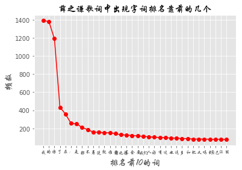
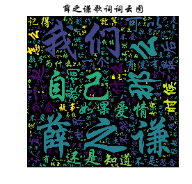

本文对薛之谦的部分歌词进行了文本挖掘处理，欢迎围观~
目标：绘制词云图，分析词频并可视化
文本预处理
1 | import re |
1 | #读取原始文本文件 |
1 | #去掉非中文字符串 |
1 | #去掉空字符串 |
1 | #对文本进行分词处理 |
1 | words[0:10] |
['\ufeff,夜深人静, ,那,是,爱情',
'偷偷地,控制,着,我,的,心',
'提醒,我, ,爱,你,要,随时,待命',
' ',
'音乐,安静, ,还是,爱情,啊',
'一步,一步,吞噬,着,我,的,心',
'爱上你, ,我,失去,了,我,自己',
' ',
'爱得,那么,认真, ,爱得,那么,认真',
'可,还是,听见,了,你,说,不,可能']
1 | wo=','.join(words) |
1 | type(wo) |
str
词频统计
1 | counter = {} |
1 | sorted_counter |
[(' ', 2424),
('我', 1388),
('的', 1380),
('你', 1189),
('了', 433),
('在', 358),
('：', 255),
('是', 251),
('都', 209),
('不', 187),
('着', 157),
('说', 157),
('就', 152),
('谁', 152),
('爱', 142),
('薛之谦', 129),
('还', 127),
('会', 121),
('要', 118),
('我们', 111),
('人', 108),
('好', 102),
('有', 100),
('过', 97),
('也', 93),
('这', 92),
('多', 88),
('和', 87),
('把', 82),
('又', 82),
('吗', 82),
('到', 80),
('自己', 79),
...]
1 | x=sorted_counter[1:35] |
1 | x |
[('我', 1388),
('的', 1380),
('你', 1189),
('了', 433),
('在', 358),
('：', 255),
('是', 251),
('都', 209),
('不', 187),
('着', 157),
('说', 157),
('就', 152),
('谁', 152),
('爱', 142),
('薛之谦', 129),
('还', 127),
('会', 121),
('要', 118),
('我们', 111),
('人', 108),
('好', 102),
('有', 100),
('过', 97),
('也', 93),
('这', 92),
('多', 88),
('和', 87),
('把', 82),
('又', 82),
('吗', 82),
('到', 80),
('自己', 79),
('让', 79),
('能', 78)]
1 | xlabel=[] |
1 | xnames |
['我', '的', '你', '了', '在', '：', '是', '都', '不', '着']
1 | plt.style.use('ggplot') |
Text(0.5,1,'薛之谦歌词中出现字词排名靠前的几个')

可见，出现最多的字词为“我”，“的”，“你”
绘制词云图
1 | fig=WordCloud(collocations=False,font_path='/home/fantasy/Desktop/xzq/华文行楷.ttf',width=1400,height=1400,min_font_size=3,margin=2).generate(wo) |
Text(0.5,1,'薛之谦歌词词云图')
